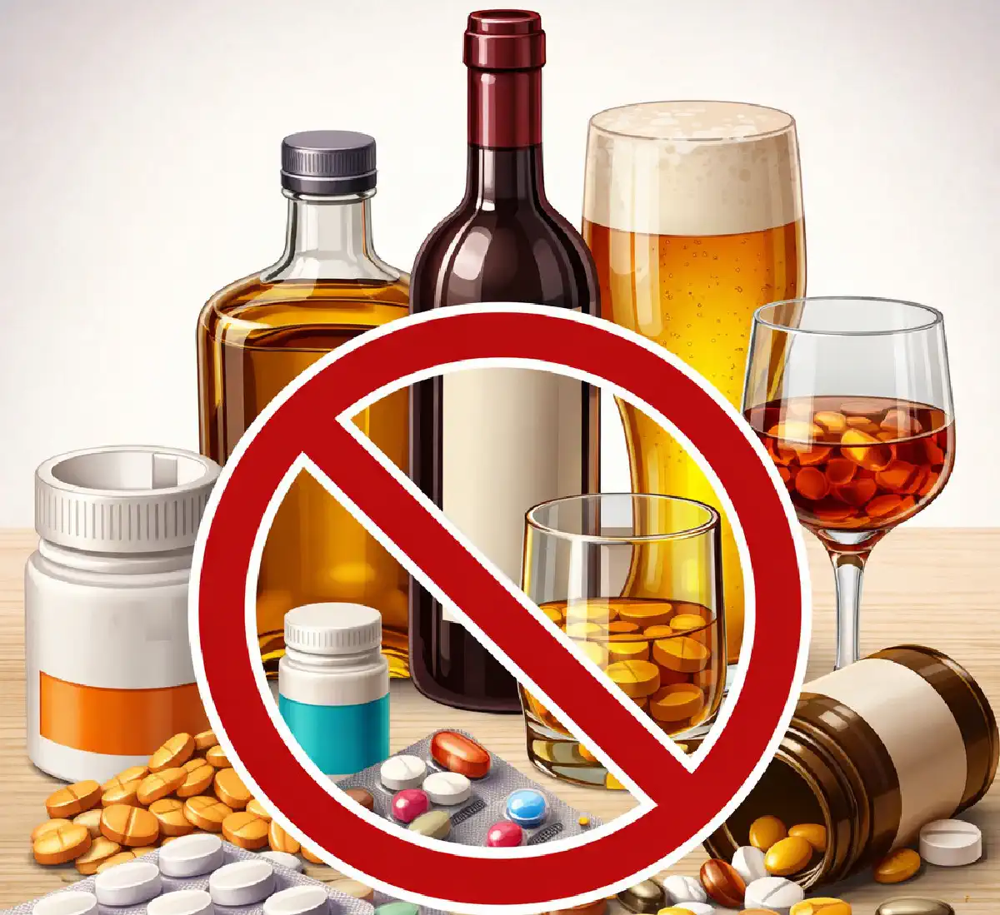

+38(068) 79 72 782
+38(068) 79 72 782Пігулки які не можна заважати з алкоголем
Смертельний коктейль із аптечки


Безкоштовна консультація, працюємо цілодобово 24/7
Смертельний коктейль із аптечки

Поєднання лікарських препаратів з алкоголем — одна з найпоширеніших і найнебезпечніших помилок. Багато пацієнтів не надають значення «келиху вина» під час лікування, однак навіть невелика кількість етанолу може кардинально змінити дію препарату і призвести до тяжких наслідків — від інтоксикації до загрози життю.
Перш за все важливо розуміти, що алкоголь впливає на всі основні системи організму і активно втручається в процеси метаболізму. Печінка, яка відповідає за переробку як ліків, так і етанолу, виявляється перевантаженою. У результаті змінюється швидкість виведення препаратів: одні починають накопичуватися і викликати передозування, інші — навпаки, втрачають свою ефективність. Особливу небезпеку становить посилення побічних ефектів. Алкоголь може багаторазово підвищувати седативну дію препаратів, викликати виражену сонливість, пригнічення дихання, зниження артеріального тиску. У тяжких випадках це може призвести до втрати свідомості і навіть летального наслідку.
Етанол змінює роботу центральної нервової системи. При поєднанні з психотропними препаратами (антидепресанти, транквілізатори, снодійні) зростає ризик порушення координації, загальмованості, сплутаності свідомості й агресивної поведінки. Це не тільки небезпечно для самого пацієнта, а й збільшує ризик травм і нещасних випадків. Не менш серйозні наслідки можливі при поєднанні алкоголю з препаратами, що впливають на серцево-судинну систему. Така взаємодія може викликати різкі коливання артеріального тиску, тахікардію, аритмії та погіршення кровообігу.
Алкоголь здатний посилювати токсичний вплив на печінку. Особливо це стосується знеболювальних і протизапальних препаратів. При регулярному поєднанні з алкоголем зростає ризик ушкодження печінки, аж до розвитку гепатиту і печінкової недостатності. Слід пам’ятати і про вплив алкоголю на рівень цукру в крові. При поєднанні з деякими ліками (наприклад, цукрознижувальними засобами) це може призвести до небезпечних коливань глюкози і погіршення стану пацієнта.
Окрема проблема — зниження прихильності до лікування. На тлі вживання алкоголю пацієнти частіше забувають приймати препарати, порушують дозування або повністю припиняють терапію, що знижує ефективність лікування і може призвести до прогресування захворювання. Поєднання алкоголю з лікарськими препаратами — це не невинна звичка, а серйозний ризик для здоров’я. Навіть мінімальні дози спиртного можуть змінити дію ліків, посилити побічні ефекти і призвести до непередбачуваних наслідків.
Алкоголь впливає на центральну нервову систему, печінку, серцево-судинну систему та обмін речовин. Коли він поєднується з медикаментами, відбувається: посилення токсичного навантаження на печінку, непередбачувана зміна дії препарату, посилення побічних ефектів, пригнічення дихання і свідомості, ризик кровотеч, аритмій і коми.
Особливо небезпечні ситуації, коли людина приймає відразу кілька препаратів — їх взаємодія з етанолом стає ще більш непередбачуваною. При одночасному прийомі кількох ліків зростає ризик так званих лікарських взаємодій. Алкоголь може посилювати дію одних препаратів і послаблювати дію інших, створюючи ефект «перехресної реакції». У результаті складно передбачити, як саме відреагує організм — можливі як передозування, так і недостатній терапевтичний ефект. Якщо препарат приймається курсом, а алкоголь вживається регулярно, токсичне навантаження на печінку та інші органи зростає поступово. Це може призвести до прихованого ушкодження печінки, яке тривалий час не проявляється симптомами, але зрештою призводить до серйозних порушень. Також слід пам’ятати, що деякі реакції можуть розвиватися не відразу, а через кілька годин після прийому алкоголю і ліків. Це створює хибне відчуття безпеки і збільшує ймовірність тяжких наслідків.
Етанол може як посилювати, так і послаблювати дію ліків. Основні механізми:
У результаті навіть звична доза ліків може стати небезпечною. печінка є основним органом, що відповідає за переробку більшості медикаментів. При вживанні алкоголю її ферментні системи «перемикаються» на знешкодження етанолу, через що метаболізм ліків порушується. Це може призвести або до накопичення діючої речовини в крові, або до її надто швидкого руйнування. Особливо небезпечне накопичення препарату. У таких випадках стандартна терапевтична доза починає діяти як підвищена, що збільшує ризик побічних ефектів і токсичного впливу на організм. Це стосується знеболювальних, психотропних засобів, серцево-судинних препаратів і багатьох інших ліків.
З іншого боку, прискорений метаболізм знижує ефективність лікування. Препарат не встигає чинити належну терапевтичну дію, що може призвести до погіршення стану пацієнта і прогресування захворювання. Посилення седативного ефекту — один із найнебезпечніших механізмів. При поєднанні алкоголю зі снодійними, транквілізаторами або опіоїдними препаратами можливе виражене пригнічення центральної нервової системи. Це проявляється сильною сонливістю, загальмованістю, порушенням дихання і в тяжких випадках може призвести до коми. Взаємодія етанолу з медикаментами — це складний і непередбачуваний процес, при якому навіть звичні дозування можуть стати потенційно небезпечними. Саме тому під час лікування рекомендується повністю виключити вживання алкоголю.
До найпоширеніших препаратів належать:
Навіть одноразовий прийом на тлі алкоголю може викликати серйозні ускладнення. Особливу небезпеку становить парацетамол. У нормі він метаболізується в печінці, однак при поєднанні з алкоголем зростає утворення токсичних метаболітів. Це може призвести до гострого ураження печінки, яке іноді розвивається непомітно, але здатне закінчитися печінковою недостатністю.
Ібупрофен та інші нестероїдні протизапальні препарати (НПЗП), включаючи кейвер (декскетопрофен), чинять подразнювальну дію на слизову оболонку шлунка. Алкоголь посилює цей ефект, підвищуючи ризик ерозій, виразок і кровотеч. Особливо це небезпечно для людей із гастритом, виразковою хворобою або підвищеною кислотністю. Додатково зростає навантаження на нирки. НПЗП можуть знижувати нирковий кровотік, а алкоголь посилює зневоднення, що в поєднанні збільшує ризик порушення функції нирок.
Слід враховувати, що знеболювальні препарати можуть «маскувати» симптоми погіршення стану. На тлі алкоголю людина може не помітити наростаючу інтоксикацію або внутрішні ушкодження, що відкладає звернення за медичною допомогою. Ризик ускладнень значно зростає при перевищенні дозування, поєднанні кількох препаратів або наявності хронічних захворювань. Навіть якщо симптоми відсутні одразу, негативний вплив на органи може проявитися пізніше.
Небезпечні комбінації:
Алкоголь різко посилює їх пригнічувальну дію на центральну нервову систему. Це може призвести до:
Такі поєднання вважаються одними з найнебезпечніших. Дані препарати належать до засобів із седативною, анксіолітичною і снодійною дією. Вони уповільнюють активність центральної нервової системи, знижують тривожність, сприяють розслабленню і засинанню. Алкоголь діє аналогічним чином, тому при спільному вживанні їх ефекти підсумовуються і багаторазово посилюються.
Особливо небезпечне пригнічення дихання. У нормі дихальний центр у головному мозку автоматично регулює частоту і глибину дихання. Під дією алкоголю і подібних препаратів ця функція пригнічується, що може призвести до поверхневого або рідкого дихання, а в тяжких випадках — до його зупинки. Значно знижується артеріальний тиск, що погіршує кровопостачання життєво важливих органів, включаючи головний мозок. Це може проявлятися запамороченням, слабкістю, втратою свідомості й підвищеним ризиком травм.
Окрему загрозу становить втрата контролю над станом. Людина не здатна адекватно оцінити своє самопочуття, може не помітити наростаючі симптоми і не звернутися по допомогу вчасно. У таких ситуаціях оточуючі часто сприймають тяжкий стан за звичайне сп’яніння, що ще більше затримує надання медичної допомоги. Ризик ускладнень зростає при перевищенні дозування, поєднанні кількох седативних препаратів, а також у літніх людей і пацієнтів із хронічними захворюваннями.
До них належать:
При спільному прийомі можливо:
Алкоголь повністю нівелює терапію і може погіршити психічний стан. Антидепресанти впливають на нейромедіатори головного мозку, регулюючи настрій, рівень тривоги й емоційний стан. Алкоголь, своєю чергою, чинить депресивну дію на центральну нервову систему і порушує баланс цих самих нейромедіаторів. У результаті їх спільне застосування може призводити до протилежного ефекту — посилення симптомів депресії, дратівливості, тривоги і навіть агресивної поведінки.
Особливу небезпеку становить ризик розвитку серотонінового синдрому — стану, пов’язаного з надмірним накопиченням серотоніну. Він може проявлятися збудженням, тремором, підвищенням температури, прискореним серцебиттям, пітливістю і в тяжких випадках потребує термінової медичної допомоги. Можливі порушення з боку серцево-судинної системи. Деякі антидепресанти в поєднанні з алкоголем можуть викликати аритмії, нестабільність артеріального тиску і погіршення загального самопочуття.
Алкоголь знижує ефективність терапії, оскільки порушує регулярність прийому препаратів, змінює їх метаболізм і заважає досягненню стабільного рівня діючої речовини в крові. У результаті лікування стає менш результативним, а процес відновлення — тривалішим. У пацієнтів може знижуватися мотивація до лікування, погіршуватися сон, посилюватися відчуття апатії або безнадійності. У деяких випадках зростає ризик імпульсивних дій і погіршення психічного стану.
Найпоширеніші:
Поєднання з алкоголем може викликати:
Особливо небезпечно для пацієнтів із гіпертонією і серцево-судинними захворюваннями. Ці препарати використовуються для контролю артеріального тиску і зниження навантаження на серце. Алкоголь, маючи судинорозширювальний ефект, може значно посилювати їх дію, що призводить до надмірного зниження тиску. У результаті порушується кровопостачання головного мозку та інших життєво важливих органів. Різке падіння тиску може супроводжуватися вираженою слабкістю, потемнінням в очах, хиткістю ходи і навіть короткочасною втратою свідомості. У тяжких випадках розвивається колапс — стан, при якому різко погіршується кровообіг і потрібна термінова медична допомога.
Бісопролол, як бета-блокатор, впливає на частоту серцевих скорочень. У поєднанні з алкоголем можливе надмірне уповільнення пульсу або, навпаки, його нерегулярність. Це підвищує ризик аритмій і погіршує роботу серцево-судинної системи. Алкоголь може порушувати контроль захворювання: пацієнти пропускають прийом препаратів, неправильно оцінюють свій стан або ігнорують симптоми погіршення. Це збільшує ймовірність гіпертонічних кризів та інших ускладнень.
Препарати:
Алкоголь посилює седативний ефект антигістамінних засобів, що призводить до:
Особливо небезпечні препарати першого покоління (супрастин, тавегіл).
Антигістамінні препарати застосовуються для лікування алергічних реакцій, однак багато з них впливають на центральну нервову систему. Препарати першого покоління мають виражений седативний ефект — вони викликають сонливість, уповільнюють реакції і знижують уважність. Алкоголь посилює цю дію, що може призвести до глибокої загальмованості і порушення координації.
На тлі такого поєднання людина може відчувати сильну втому, «затуманеність» свідомості, труднощі з концентрацією і орієнтацією в просторі. Це особливо небезпечно при керуванні транспортом, роботі з механізмами і в ситуаціях, що потребують швидкої реакції. Додатковий ризик пов’язаний із пригніченням дихання. Хоча антигістамінні препарати самі по собі рідко викликають виражене пригнічення дихального центру, у поєднанні з алкоголем цей ефект може посилюватися, особливо при перевищенні дозування або прийомі кількох препаратів одночасно.
Навіть препарати другого покоління (едем, дезлоратадин), які вважаються менш седативними, при поєднанні з алкоголем можуть викликати небажані реакції — від легкої сонливості до зниження концентрації уваги. Алкоголь може посилювати побічні ефекти з боку серцево-судинної системи — викликати прискорене серцебиття, нестабільність тиску і погіршення загального самопочуття.
Часто використовувані:
Незважаючи на уявну «безпечність», поєднання з алкоголем може:
Організм у період хвороби особливо вразливий, тому алкоголь протипоказаний. Противірусні препарати спрямовані на підтримку імунної системи і боротьбу з інфекцією. Алкоголь, навпаки, пригнічує імунну відповідь, знижуючи здатність організму ефективно протистояти вірусам. У результаті процес одужання сповільнюється, а симптоми можуть зберігатися довше або перебігати тяжче.
Навантаження відчуває печінка, оскільки їй одночасно доводиться переробляти і лікарські речовини, і етанол. Це може призвести до порушення метаболізму препаратів, накопичення токсинів і розвитку побічних ефектів.
Можливе посилення небажаних реакцій з боку шлунково-кишкового тракту: нудота, блювання, дискомфорт у животі. У поєднанні з алкоголем ці симптоми можуть проявлятися сильніше і погіршувати загальний стан пацієнта. У період хвороби організм уже ослаблений. Порушений водно-електролітний баланс, знижений рівень енергії, активізовані запальні процеси. Вживання алкоголю в цей період посилює зневоднення, погіршує самопочуття і може сприяти розвитку ускладнень.
До них належать:
Алкоголь може порушувати гормональний баланс і знижувати ефективність терапії:
Регулярне поєднання може звести лікування нанівець. Гормональні препарати щитоподібної залози призначаються для підтримання стабільного рівня тиреоїдних гормонів в організмі. Їх дія потребує точного дозування і регулярного прийому. Алкоголь втручається в ці процеси, порушуючи як засвоєння препарату, так і гормональну регуляцію загалом. Етанол може змінювати швидкість метаболізму гормонів, через що їх рівень у крові стає нестабільним. Це призводить до коливань стану: від симптомів гіпотиреозу (слабкість, сонливість, набір ваги) до проявів гіпертиреозу (прискорене серцебиття, тривожність, пітливість). Особливо чутливою до таких змін є серцево-судинна система. На тлі поєднання гормональних препаратів з алкоголем зростає ризик тахікардії, аритмій і перепадів артеріального тиску. Це може бути небезпечно для пацієнтів із уже наявними захворюваннями серця.
Важливо вміти своєчасно розпізнавати небезпечні симптоми:
Поява таких ознак потребує негайних дій. При погіршенні стану не можна зволікати, оскільки ситуація може стрімко прогресувати. Насамперед необхідно припинити прийом алкоголю і медикаментів та оцінити загальний стан людини.
Якщо людина перебуває у свідомості, її слід покласти, забезпечити приплив свіжого повітря, звільнити від тісного одягу і уважно спостерігати за диханням і пульсом. Залишати її без нагляду не можна. У разі втрати свідомості необхідно покласти людину на бік, щоб уникнути потрапляння блювотних мас у дихальні шляхи, і одразу викликати швидку допомогу. За відсутності ознак дихання або пульсу слід розпочати реанімаційні заходи до приїзду лікарів.
Особливу настороженість мають викликати болі в грудях, виражена задишка, судоми і різке падіння тиску — такі симптоми можуть вказувати на тяжкі ускладнення. Також важливо повідомити медичним працівникам, які препарати приймалися і чи вживався алкоголь — це допоможе швидше визначити причину стану і розпочати лікування.
При появі симптомів необхідно:
Самостійні спроби лікування в таких ситуаціях можуть бути небезпечними. Коли необхідно терміново звернутися по медичну допомогу
Подібні стани становлять серйозну загрозу для життя і потребують негайного медичного втручання.
У випадках, коли самопочуття погіршується після поєднання алкоголю і лікарських препаратів, потрібна кваліфікована медична допомога. Наркологічна клініка UmbrellaPlus здійснює терміновий виїзд лікаря додому в таких містах України, як (Київ | Харків | Одеса | Дніпро | Львів | Запоріжжя | Черкаси).
Наші лікарі забезпечують:
Телефон для консультації та виклику нарколога: +38(050-021-69-57)

Так, ми суворо дотримуємося повної конфіденційності на всіх етапах лікування. Інформація про пацієнта, діагноз та проходження терапії не передається третім особам. Звернення до нас не тягне за собою постановку на облік. Ви можете бути впевнені у безпеці та анонімності.
Програма лікування розробляється індивідуально після консультації з фахівцем. Враховуються вид залежності, її тривалість, фізичний та психологічний стан пацієнта. Такий підхід дозволяє підвищити ефективність терапії та знизити ризик зриву. Ми не використовуємо шаблонні рішення.
Так, ми супроводжуємо пацієнтів і після основного курсу лікування. Проводяться консультації, рекомендації щодо адаптації та профілактики рецидивів. За потреби можлива подальша психологічна підтримка. Це допомагає зберегти результат та повернутися до повноцінного життя.
Номер телефону:
+380 (68) 797 27 82
+380 (50) 021 69 57
Адресу наркологічного центра вашого міста уточнюйте за
телефоном
Працюємо: Київ, Одеса, Львів, Харків, Дніпро, Запоріжжя,
Черкасах, Чугуєві, Чорноморську, Кам'янському
Telegram: t.me/umbrellaplus
Графік работы: Цілодобово